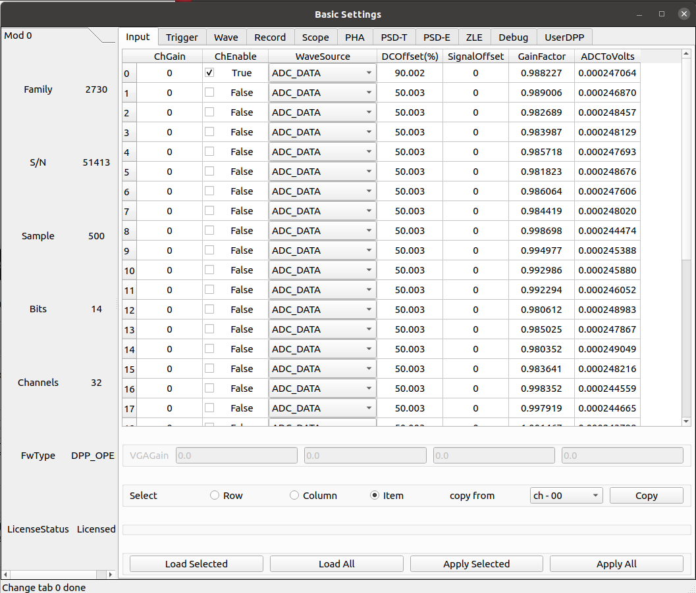
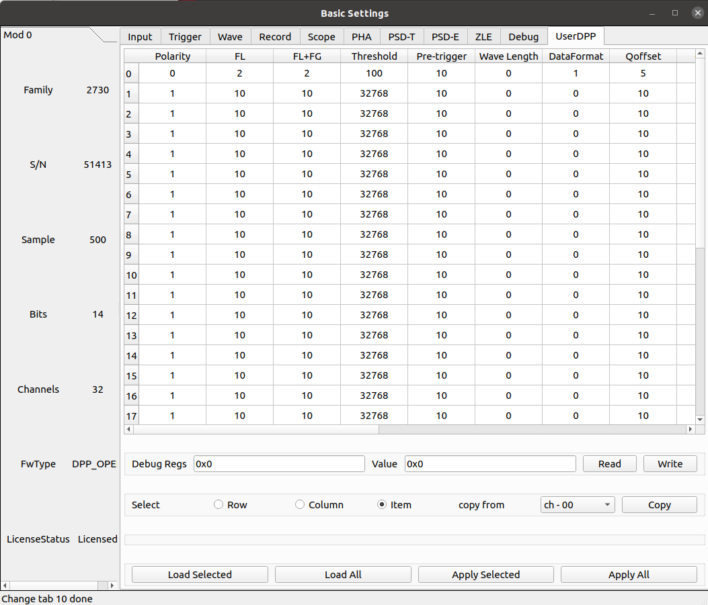

UserDPP 固件
吴鸿毅(wuhongyi@qq.com/wuhongyi@pku.edu.cn)开发的固件，本固件侧重于特殊算法的实现。
目前支持 2740/2745/2730/2751 固件定制，欢迎有特殊固件需求的老师联系我们。
2730 的固件，FPGA 运行时钟为 125 MHz。每个时钟的四个采样点相加作为一个采样点处理。2751 的固件，FPGA 运行时钟为 125 MHz，每个时钟的八个采样点相加作为一个采样点处理。
PHA
输入信号
参数 ChEnable
独立设定每个通道是否开启使用。如果通道不启用，它不提供任何数据，同时它的自触发也关闭。
参数 DCOffset
当输入信号为正极性时，DCOffset 0% 为道址 0；当输入信号为负极性时， DCOffset 100% 时为道址 0。
UserDPP
参数 Polarity
当输入信号为正极性时设置为 1，负极性时设置为 0。
参数 FL
XIA fast filter 的参数，快梯形滤波参数
FL 单位为 8 ns。可设置参数为 1-127
参数 FL+FG
快梯形滤波参数
FL+FG 单位为 8 ns，参数需大于等于 FL。可设置参数为 1-127
参数 Threshold
快梯形滤波的触发阈值
参数 Pre-trigger
当记录波形时候，触发前的长度。
2740/2745 最大可设置 4095，单位为采样点。
2730 最大可设置 4095，单位为 4 个采样点。
参数 Wave Length
当参数值大于 0 时，则记录波形。
2740/2745 最大可设置参数为 4095，单位为 4 个采样点。
2730 最大可设置参数为 4095，单位为 4 个采样点。
参数 BL
基线评估策略中连续两段积分的长度。
2740/2745 最大可设置值为 1023。 2730/2751 最大可设置值为 2047。
参数 XIAoffset
此参数为触发前的采样点。用于确定梯形三段积分的准确积分区间。
单位为 8 ns。
2740/2745 最大可设置 255。
参数 SL
梯形参数的上升沿长度。
单位为 8 ns。
最大可设置 1023。
参数 SG
梯形参数的平台长度。
单位为 8 ns
参数 TAU
信号衰减时间常数。
该参数用于在线监视时计算。数据解码时需要将该参数输入到解码文件。
单位 ns。
逻辑参数
2740/2745/2730/2751 validtriggerdelay 256。
PHA+PSD
UserDPP
参数 Qoffset
QDC 积分的触发延迟。 单位为 8 ns
2740/2745 最大可设置 127。
参数 Qshort
QDC 积分短门。 单位为 8 ns
2740/2745 最大可设置 8191。
参数 Qlong
QDC 积分长门。 单位为 8 ns
2740/2745 最大可设置 8191。
参数 COS offset
余玄相似度鉴别算法积分起点偏置。单位为 8 ns
2740/2745 最大可设置 127。
参数 COS gate
余玄相似度鉴别算法积分门。单位为 8 ns
2740/2745 最大可设置 1023。
PHA+CFD
UserDPP
参数 CFD DELAY
CFD 算法的延迟参数，单位 8 ns。
最大可设置 127。
参数 CFD FRAC
CFD fraction 参数，可设置参数为 0-7。对应 8/8，7/8，6/8，5/8，4/8，3/8，2/8，1/8 的压缩因子。